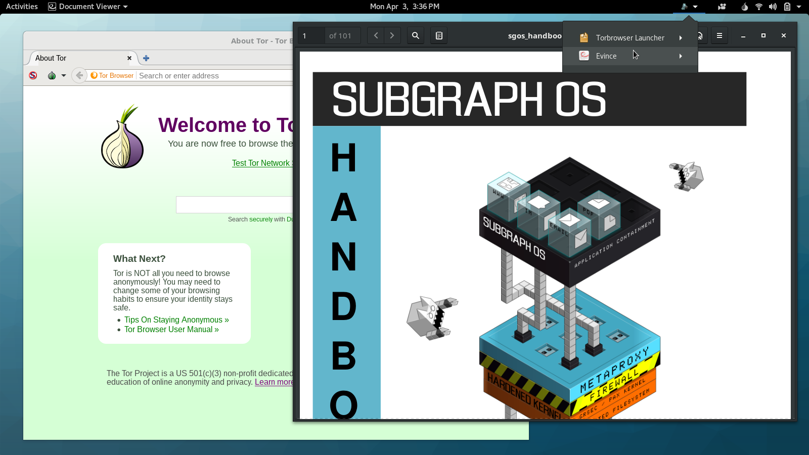

Tag: linux

Breaking the Security Model of Subgraph OS
I recently traveled to Amsterdam to attend a meeting with Tor Project staff, volunteers, and other members of the wider Tor community. Before trips like this, I prepare a separate travel computer, only bringing with me data and credentials that I might need during my trip. My primary laptop runs Qubes, but this time I decided to install Subgraph OS on my travel laptop. I had only briefly messed with it before, and there’s no better way to learn about a new operating system than by forcing yourself to actually use it for a few days.
Subgraph OS is an “adversary resistant computing platform.” It’s similar to Tails in that it’s based on Debian and all traffic is forced through Tor (that’s changing though: there’s now basic support for clearnet Chromium and OpenVPN). It uses a grsecurity Linux kernel, and many apps run in “oz sandboxes”, a homebrew sandbox solution that protects you even if an attacker manages to exploit a bug in one of these apps. Subgraph OS also includes the Subgraph Firewall, an application firewall similar to Little Snitch for macOS — something that’s pretty awesome, and hasn’t really existed in the Linux ecosystem before. Basically, it’s designed to be an easy-to-use Linux distro that’s extremely secure.

Backdoored Linux Mint, and the Perils of Checksums
Someone hacked the website of Linux Mint — which, according to Wikipedia’s traffic analysis report is the 3rd most popular desktop Linux distribution after Ubuntu and Fedora — and replaced links to ISO downloads with a backdoored version of the operating system. This blog post explains the situation.

Hardening Debian for the Desktop Using Grsecurity
I recently built a desktop system that I think is reasonably secure. It’s running Debian sid, also known as “unstable” — though in the Debian desktop world that just means you get to use the newest software. It’s just about as stable as “stable”, and besides, #yolo. It’s also running a grsecurity-patched Linux kernel and PaX, technologies that make Linux way more secure. Grsecurity protects you against memory corruption attacks, such as buffer overflows.

Why I say Linux instead of GNU/Linux
I’ve been writing a computer security column for the Intercept. In most of my columns I mention Linux. Even when it’s not directly relevant (though it often is), most of my columns are in the form of tutorials, and I’d like my tutorials to be equally useful for Linux users as they are for Windows and Mac users.
Dual-booting Qubes and Ubuntu with Encrypted Disks
Qubes is my preferred operating system, but occasionally you need to run something else. It’s hard to get certain hardware working the way you expect in Qubes, like webcams or non-disk USB devices. And Qubes VMs don’t support 3D acceleration, which you might occasionally need. You also can’t run VirtualBox inside of Qubes. You normally don’t have any reason to do this, except for very specific cases, like software development with Vagrant.
So here are instructions for how to dual-boot Qubes R2 rc1 and Ubuntu 14.04 LTS, using disk encryption for both. You should be able to adopt this same technique to dual-boot pretty much any two GNU/Linux distros with disk encryption. Keep in mind that if you’re booted into Ubuntu and you get owned, it’s possible for the attacker to then compromise Qubes. (You have to get really, really, really owned for an attacker who compromised Qubes to then compromise Ubuntu.)

The Operating System That Can Protect You Even if You Get Hacked
This was originally published on the Freedom of the Press Foundation’s blog.
We wrote about the importance of the Tails operating system to all of the NSA journalists last week, but there’s also another little-known operating system that journalists should consider using if they find themselves in high-risk scenarios. It’s called Qubes.
I’ve only been using Qubes for a few weeks, but I feel like my operating system is now a digital fortress. Let me try to explain why, and how Qubes differs from Tails.
Ubuntu is finally taking privacy seriously
Update: A couple people have pointed out that the privacy changes won’t actually take affect in 14.04, which means that fixubuntu.com will still be necessary until at least 14.10, which will be released in October. Oops.
In October 2012, Canonical made a horrible mistake. They included a “feature” in Ubuntu 12.10 that has been widely considered adware and spyware. I blogged about the new Ubuntu’s Amazon ads and data leaks for EFF at the time, with the main ask being that Dash’s online search should be an opt-in feature and not enabled by default.

Canonical shouldn’t abuse trademark law to silence critics of its privacy decisions
I run the website fixubuntu.com, a place to quickly and easily learn how to disable the privacy-invasive features that are enabled by default in Ubuntu.
This morning I received this email from an employee of Canonical Limited, the company that owns and manages the Ubuntu project:
Unity vs. Windows 8
I posted this as a comment on my previous blog post, Why I’m Leaving Ubuntu for Debian. I decided it’s worth it’s own post though.

Why I'm Leaving Ubuntu for Debian
I decided to switch to Debian.
I’ve been using Ubuntu as my primary operating system since 2005. Back then it was truly amazing. Before I started using Ubuntu I tried out Red Hat, Mandrake (and later Mandriva), Slackware, Gentoo, and even Debian. In all of them, something didn’t work. Usually it was wifi, but sometimes it was audio or video, or weird X config problems. But when I switched to Ubuntu, all of that went away. Rather than being frusturated that I was still a Linux noob and couldn’t even connect to the internet, Ubuntu helped me get past the initial barriers so I could really dive in. I’m eternally grateful to Ubuntu for this, and I’m very impressed at how successful they’ve has been at fixing bug #1 (though there’s still a long way to go).